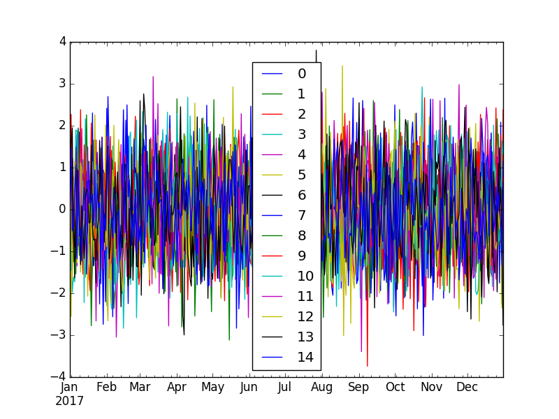
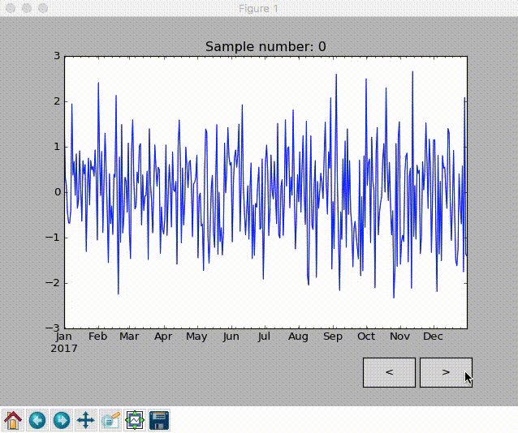

Imagine that you have to do data cleaning on 10s or 100s of sample points (akin to a row in a 2d matrix). For the purposes of data cleaning, you'd also need to zoom/pan at the data correpsonding to each sample point. Would you create 100s of static plots? We lose the zoom/pan ability there. How about we write a simple function and manually change the argument to reflect the sample #.
In this post, I'll be looking at a simple Matplotlib widget to sift through the samples and retain the ability to pan and zoom. This post is heavily inspired by Jake Vanderplas' PyData 2013 Matplotlib tutorial. I would be creating 15 timeseries having recorded daily for an year for illustration purposes.
For some reasons, it works better than the default OSX one.
%matplotlib tk
import matplotlib.pyplot as plt
import numpy as np
import pandas as pd
import sys
# Fixing the seed for reproducibility
np.random.seed(0)
df = pd.DataFrame(np.random.randn(365, 15), index=pd.DatetimeIndex(start='2017',freq='D', periods=365))
df.head()
fig, ax = plt.subplots()
df.plot(ax=ax)
Notice, that since I used %matplotlib TK backend, I don't see the plot embedded in the notebook. Thus I'll save the current figure as an image and then link it here.
plt.savefig("all_data.png")

This sure does not look pretty.

Great. It seems to do the intended job. Let us now look at the individual pieces and how we can tie them up.
In the first frame we would like to plot the data for the first sample.
fig, ax = plt.subplots()
df[0].plot(ax=ax, title="Sample number: 0")
First, we'd want to make space for the button at the bottom and place them there. We can do this as follows:
from matplotlib.widgets import Button
fig.subplots_adjust(bottom=0.2)
axprev = plt.axes([0.7, 0.05, 0.1, 0.075])
axnext = plt.axes([0.81, 0.05, 0.1, 0.075])
bnext = Button(axnext, '>')
bprev = Button(axprev, '<')
We'd next want to call some function each time either of the two buttons are pressed. We would also need a notion of currently selected data point. The idea would be that each time, > is pressed, we advance the currently selected point and plot correspondingly.
We'd have to define next() and prev() where we increment and decrement the selected data point.
class Index:
data = df
selected = 0
def next(self, event):
self.selected += 1
ax.cla()
df[self.selected].plot(ax=ax)
ax.set_title("Sample number: %d" %self.selected)
def prev(self, event):
self.selected -= 1
ax.cla()
df[self.selected].plot(ax=ax)
ax.set_title("Sample number: %d" %self.selected)
Here, ax.cla() clears the data for the current data point before drawing for the next one. df[self.selected].plot(ax=ax) plots for the newly selected data. ax.set_title("Sample number: %d" %self.selected) would change the title to reflect the currently used data point.
We can link to callback as follows:
callback = Index()
bnext.on_clicked(callback.next)
bprev.on_clicked(callback.prev)
If you notice, we simply incremented and decremented the selected data point without considering going beyond (0, number of data points). So, we need to change the call back functions to check that we do not go beyond the range. This would require the following changes to next() with the changes to prev() being similar.
data_min = 0
data_max = data.shape[1]-1
selected = 0
def next(self, event):
if self.selected >=self.data_max:
self.selected = self.data_max
ax.set_title('Last sample reached. Cannot go forwards')
else:
self.selected += 1
ax.cla()
df[self.selected].plot(ax=ax)
ax.set_title("Sample number: %d" %self.selected)
There you go. This was fairly simple and fun to do, and yet can be very helpful! Did you like it, have suggestions, feel free to comment!
from matplotlib.widgets import Button
fig, ax = plt.subplots()
fig.subplots_adjust(bottom=0.2)
df[0].plot(ax=ax, title="Sample number: 0")
class Index:
data = df
data_min = 0
data_max = data.shape[1]-1
selected = 0
def next(self, event):
if self.selected >=self.data_max:
self.selected = self.data_max
ax.set_title('Last sample reached. Cannot go forwards')
else:
self.selected += 1
ax.cla()
df[self.selected].plot(ax=ax)
ax.set_title("Sample number: %d" %self.selected)
def prev(self, event):
if self.selected <=self.data_min:
self.selected = 0
ax.set_title('First sample reached. Cannot go backwards')
else:
self.selected -= 1
ax.cla()
df[self.selected].plot(ax=ax)
ax.set_title("Sample number: %d" %self.selected)
callback = Index()
axprev = plt.axes([0.7, 0.05, 0.1, 0.075])
axnext = plt.axes([0.81, 0.05, 0.1, 0.075])
bnext = Button(axnext, '>')
bnext.on_clicked(callback.next)
bprev = Button(axprev, '<')
bprev.on_clicked(callback.prev)